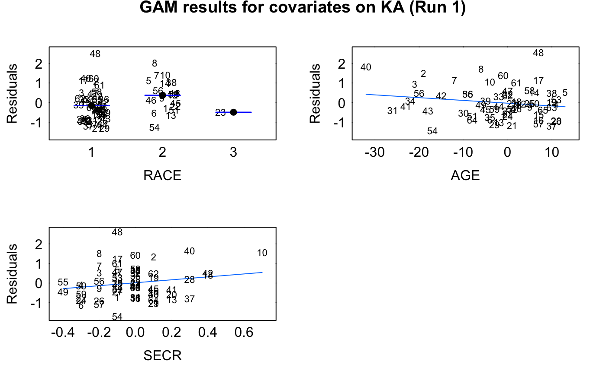
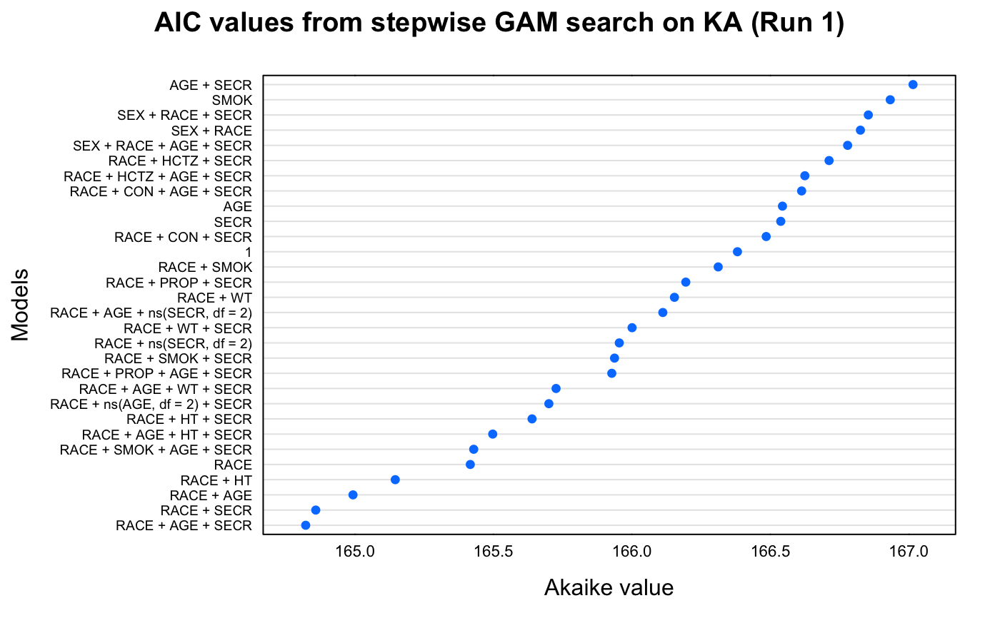
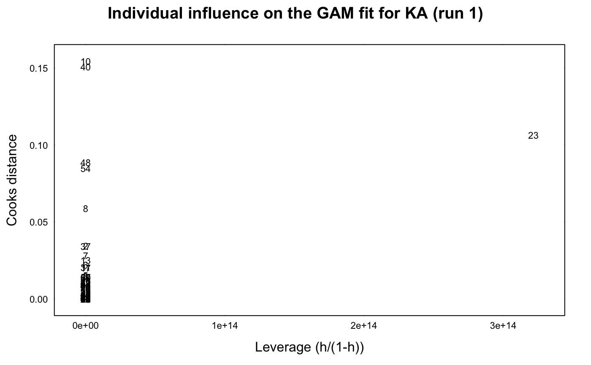
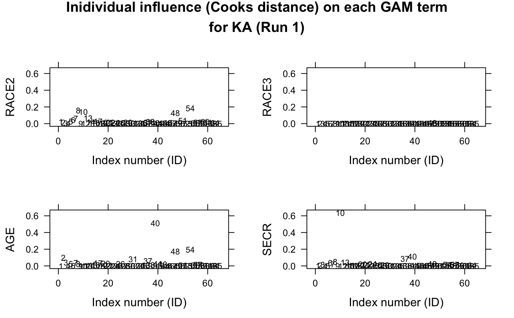

Function takes an Xpose object and performs a generalized additive model (GAM) stepwise search for influential covariates on a single model parameter.
xpose.gam( object, parnam = xvardef("parms", object)[1], covnams = xvardef("covariates", object), trace = TRUE, scope = NULL, disp = object@Prefs@Gam.prefs$disp, start.mod = object@Prefs@Gam.prefs$start.mod, family = "gaussian", wts.data = object@Data.firstonly, wts.col = NULL, steppit = object@Prefs@Gam.prefs$steppit, subset = xsubset(object), onlyfirst = object@Prefs@Gam.prefs$onlyfirst, medianNorm = object@Prefs@Gam.prefs$medianNorm, nmods = object@Prefs@Gam.prefs$nmods, smoother1 = object@Prefs@Gam.prefs$smoother1, smoother2 = object@Prefs@Gam.prefs$smoother2, smoother3 = object@Prefs@Gam.prefs$smoother3, smoother4 = object@Prefs@Gam.prefs$smoother4, arg1 = object@Prefs@Gam.prefs$arg1, arg2 = object@Prefs@Gam.prefs$arg2, arg3 = object@Prefs@Gam.prefs$arg3, arg4 = object@Prefs@Gam.prefs$arg4, excl1 = object@Prefs@Gam.prefs$excl1, excl2 = object@Prefs@Gam.prefs$excl2, excl3 = object@Prefs@Gam.prefs$excl3, excl4 = object@Prefs@Gam.prefs$excl4, extra = object@Prefs@Gam.prefs$extra, ... )
| object | An xpose.data object. |
|---|---|
| parnam | ONE (and only one) model parameter name. |
| covnams | Covariate names to test on parameter. |
| trace | TRUE if you want GAM output to screen. |
| scope | Scope of the GAM search. |
| disp | If dispersion should be used in the GAM object. |
| start.mod | Starting model. |
| family | Assumption for the parameter distribution. |
| wts.data | Weights on the least squares fitting of parameter vs.
covariate. Often one can use the variances of the individual parameter
values as weights. This data frame must have column with name ID and any
subset variable as well as the variable defined by the |
| wts.col | Which column in the |
| steppit | TRUE for stepwise search, false for no search. |
| subset | Subset on data. |
| onlyfirst | TRUE if only the first row of each individual's data is to be used. |
| medianNorm | Normalize to the median of parameter and covariates. |
| nmods | Number of models to examine. |
| smoother1 | Smoother for each model. |
| smoother2 | Smoother for each model. |
| smoother3 | Smoother for each model. |
| smoother4 | Smoother for each model. |
| arg1 | Argument for model 1. |
| arg2 | Argument for model 2. |
| arg3 | Argument for model 3. |
| arg4 | Argument for model 4. |
| excl1 | Covariate exclusion from model 1. |
| excl2 | Covariate exclusion from model 2. |
| excl3 | Covariate exclusion from model 3. |
| excl4 | Covariate exclusion from model 4. |
| extra | Extra exclusion criteria. |
| ... | Used to pass arguments to more basic functions. |
Returned is a step.Gam object. In this object
the step-wise-selected model is returned, with up to two additional
components. There is an "anova" component
corresponding to the steps taken in the search, as well as a
"keep" component if the "keep=" argument was supplied in the call.
step.gam
Other GAM functions:
GAM_summary_and_plot,
xp.get.disp(),
xp.scope3(),
xpose.bootgam(),
xpose4-package
E. Niclas Jonsson, Mats Karlsson, Andrew Hooker & Justin Wilkins
## Run a GAM using the example xpose database gam_ka <- xpose.gam(simpraz.xpdb, parnam="KA")#> Start: KA ~ 1; AIC= 166.381 #> Step:1 KA ~ RACE ; AIC= 165.4162 #> Step:2 KA ~ RACE + SECR ; AIC= 164.8582 #> Step:3 KA ~ RACE + AGE + SECR ; AIC= 164.8219#> #> SUMMARY #> Call: gam(formula = KA ~ RACE + AGE + SECR, data = gamdata, trace = FALSE) #> Deviance Residuals: #> Min 1Q Median 3Q Max #> -1.63145 -0.65128 -0.05558 0.41369 2.68692 #> #> (Dispersion Parameter for gaussian family taken to be 0.6916) #> #> Null Deviance: 47.3804 on 63 degrees of freedom #> Residual Deviance: 40.8068 on 59 degrees of freedom #> AIC: 164.8219 #> #> Number of Local Scoring Iterations: 2 #> #> Anova for Parametric Effects #> Df Sum Sq Mean Sq F value Pr(>F) #> RACE 2 3.537 1.76829 2.5567 0.08613 . #> AGE 1 1.629 1.62924 2.3556 0.13018 #> SECR 1 1.408 1.40786 2.0355 0.15893 #> Residuals 59 40.807 0.69164 #> --- #> Signif. codes: 0 ‘***’ 0.001 ‘**’ 0.01 ‘*’ 0.05 ‘.’ 0.1 ‘ ’ 1 #> #> #> PATH TO FINAL MODEL #> Stepwise Model Path #> Analysis of Deviance Table #> #> Initial Model: #> KA ~ 1 #> #> Final Model: #> KA ~ RACE + AGE + SECR #> #> Scale: 0.7520703 #> #> From To Df Deviance Resid. Df Resid. Dev AIC #> 1 <start> 63 47.38043 166.3810 #> 2 RACE -2 -3.536572 61 43.84386 165.4162 #> 3 SECR -1 -1.717840 60 42.12602 164.8582 #> 4 AGE -1 -1.319258 59 40.80676 164.8219 #> #> COEFFICIENTS #> (Intercept) RACE2 RACE3 AGE SECR #> -0.08272054 0.53724306 -0.32761296 -0.01411650 0.74934090 #> #> PRERUN RESULTS #> Dispersion: #> #> DATA #> Subset expression: #> Only first value of covariate considered #> for each individual: TRUE #> Covariates normalized to median: TRUE#> (Intercept) RACE2 RACE3 AGE SECR #> 2 NaN 0.4069038 0.4069038 6.384659 0.15108146 #> 12 NaN 0.6632264 0.6632264 6.166696 0.13341637 #> 23 NaN 0.5152555 0.5152555 5.976245 0.14359840 #> 34 NaN 0.4083608 0.4083608 5.526933 0.15078901 #> 44 NaN 0.4491550 0.4491550 4.878261 0.14571869 #> 54 NaN 0.4336340 0.4336340 6.669965 0.14805262 #> 64 NaN 0.3461857 0.3461857 4.527164 0.15895947 #> 72 NaN 0.3522048 0.3522048 3.950764 0.15794212 #> 82 NaN 0.4026346 0.4026346 5.765467 0.15160252 #> 91 NaN 0.4588266 0.4588266 4.012911 0.14621651 #> 97 NaN 0.4048793 0.4048793 5.617073 0.15128375 #> 107 NaN 0.3911857 0.3911857 6.913509 0.15265331 #> 118 NaN 0.4255037 0.4255037 4.985381 0.14871870 #> 129 NaN 0.2775285 0.2775285 5.384752 0.16549514 #> 140 NaN 0.2162661 0.2162661 5.215029 0.17375389 #> 151 NaN 0.8291616 0.8291616 6.405338 0.11860555 #> 162 NaN 0.4094348 0.4094348 5.503623 0.15077884 #> 173 NaN 0.4687459 0.4687459 5.750293 0.14515016 #> 184 NaN 0.2013301 0.2013301 5.245030 0.17645826 #> 194 NaN 0.1656837 0.1656837 5.095194 0.18085408 #> 204 NaN 0.4118900 0.4118900 6.223995 0.15061385 #> 212 NaN 0.4044946 0.4044946 5.637613 0.15133188 #> 223 NaN 0.2613920 0.2613920 5.230492 0.16681641 #> 234 NaN 0.4215614 0.4215614 5.674149 0.14967349 #> 245 NaN 0.2141738 0.2141738 5.160388 0.17440596 #> 256 NaN 0.3187987 0.3187987 5.435324 0.16015507 #> 267 NaN 0.3931962 0.3931962 5.619256 0.15244641 #> 278 NaN 0.1791398 0.1791398 5.118928 0.17802496 #> 288 NaN 0.2786389 0.2786389 5.355595 0.16394934 #> 299 NaN 0.3020364 0.3020364 5.331388 0.15913854 #> 310 NaN 0.5316421 0.5316421 5.886831 0.14016374 #> 321 NaN 0.4808547 0.4808547 5.806053 0.14449849 #> 332 NaN 0.3755979 0.3755979 5.551405 0.15355223 #> 341 NaN 0.2468930 0.2468930 5.263710 0.16836440 #> 350 NaN 0.4810597 0.4810597 5.803645 0.14479950 #> 361 NaN 0.1363992 0.1363992 5.119674 0.18758251 #> 367 NaN 0.4390024 0.4390024 4.949578 0.14706063 #> 373 NaN 0.4171210 0.4171210 5.667151 0.15017331 #> 382 NaN 0.6554549 0.6554549 6.115453 0.13743260 #> 393 NaN 0.3212037 0.3212037 5.450513 0.15824381 #> 404 NaN 0.4468825 0.4468825 5.703860 0.14773504 #> 411 NaN 0.2944807 0.2944807 5.373341 0.16129232 #> 422 NaN 0.3582801 0.3582801 5.537411 0.15588547 #> 433 NaN 0.4071513 0.4071513 6.098040 0.15089973 #> 438 NaN 0.4004948 0.4004948 5.913169 0.15183038 #> 449 NaN 0.5671897 0.5671897 5.977558 0.13739557 #> 455 NaN 1.4642283 1.4642283 7.298495 0.08745328 #> 468 NaN 0.3706551 0.3706551 5.533304 0.15447763 #> 479 NaN 0.4053951 0.4053951 5.565423 0.15118627 #> 490 NaN 0.4250737 0.4250737 6.548404 0.14867238 #> 500 NaN 0.3402770 0.3402770 5.489249 0.15785681 #> 511 NaN 0.5110472 0.5110472 5.847233 0.14135623 #> 522 NaN 0.5370821 0.5370821 7.805795 0.13603361 #> 533 NaN 0.4734972 0.4734972 5.849134 0.14556442 #> 543 NaN 0.3813159 0.3813159 5.346115 0.15430963 #> 550 NaN 0.1893831 0.1893831 5.069682 0.17774347 #> 561 NaN 0.6178044 0.6178044 6.027150 0.13309655 #> 569 NaN 0.3328130 0.3328130 5.436414 0.15842242 #> 578 NaN 0.8144037 0.8144037 6.370737 0.12069337 #> 589 NaN 0.7148646 0.7148646 6.242226 0.12660672 #> 600 NaN 0.5095002 0.5095002 5.829433 0.14194991 #> 610 NaN 0.3837543 0.3837543 5.596823 0.15345795 #> 620 NaN 0.2205120 0.2205120 5.213856 0.17129241 #> 631 NaN 0.3398401 0.3398401 5.505575 0.15815307